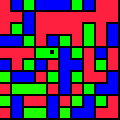
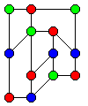

ルール(RULE)
辺(edge)が
隣接する領域を
三色で
塗り分ける。
理系パズル？
理系ミステリィ
ではない(^^;
操作方法
カーソルキーで
上下左右に
動かす。
ソフトキー２で
塗りたい色を
変える。
決定キーで
塗る。
Fig.1（完成図の例）


墨子は
糸を染める
光景を見て
言われた。
「藍草で染めれば
青い糸になり、
黄色の染料ならば
黄色になる。
もとは同じ糸も
染料によって
違う色に
染められる。
（以下、省略）」
墨子・所染編より引用
赤緑青白のダウンロード
赤緑青白(505版)のダウンロード
トップページへ